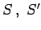
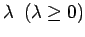
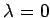
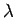
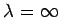
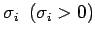
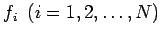
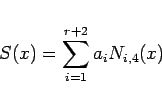

Inhalt Index DeskTop Bronstein

 Numerische Mathematik Darstellung von Kurven und Flächen mit Hilfe von Splines Kubische Splines
Numerische Mathematik Darstellung von Kurven und Flächen mit Hilfe von Splines Kubische Splines


In der Praxis sind die gegebenen Werte fi häufig Meßwerte, also fehlerbehaftet. In diesem Fall ist die Interpolationsforderung unzweckmäßig. Man führt deshalb den kubischen Ausgleichsspline ein. Er entsteht, wenn man beim kubischen Interpolationsspline die Interpolationsforderung durch
ersetzt. Die Forderung nach Stetigkeit von  und S'' bleibt erhalten, so daß sich zur Bestimmung der Spline-Koeffizienten eine Extremwertaufgabe mit Nebenbedingungen in Gleichungsform ergibt. Die Lösung erfolgt mit Hilfe einer LAGRANGE-Funktion. Einzelheiten s. Lit. 19.29, 19.30.
In (19.237) stellt  einen Glättungsparameter dar, der vorgegeben werden muß. Für  ergibt sich als Spezialfall der kubische Interpolationsspline, für ,,große``  erhält man eine glatte Näherungskurve, die dafür aber die Meßpunkte nur ungenau wiedergibt, und für  ergibt sich schließlich als weiterer Spezialfall die Ausgleichsgerade. Eine geeignete Wahl von kann am Computer im Bildschirmdialog erfolgen.
Die Parameter  in (19.237) stellen die Standardabweichungen der Meßfehler dar, mit denen die Meßwerte  evtl. behaftet sind.
Bei den bisher betrachteten kubischen Interpolations- und Ausgleichssplines waren die Abszissen der Interpolations- bzw. Meßpunkte identisch mit den Knoten der Spline-Funktion. Das hat zur Folge, daß bei großem N der Spline aus einer sehr großen Anzahl von kubischen Ansatzfunktionen (19.231) besteht. Es liegt nahe, Anzahl und Lage der Knotenpunkte frei zu wählen, da man in der Praxis meist mit wesentlich weniger Spline-Stücken auskommt. Darüber hinaus ist es numerisch günstiger, an Stelle des Ansatzes (19.231) Splines in der Form
|  | (19.238) |
anzusetzen. Dabei ist r die Anzahl der frei gewählten Knoten, und mit Ni,4(x) werden die sogenannten normalisierten B-Splines (Basis-Splines) der Ordnung 4, d.h. vom Polynomgrad 3, zum i-ten Knoten bezeichnet. Ausführungen dazu s. Lit. 19.4.